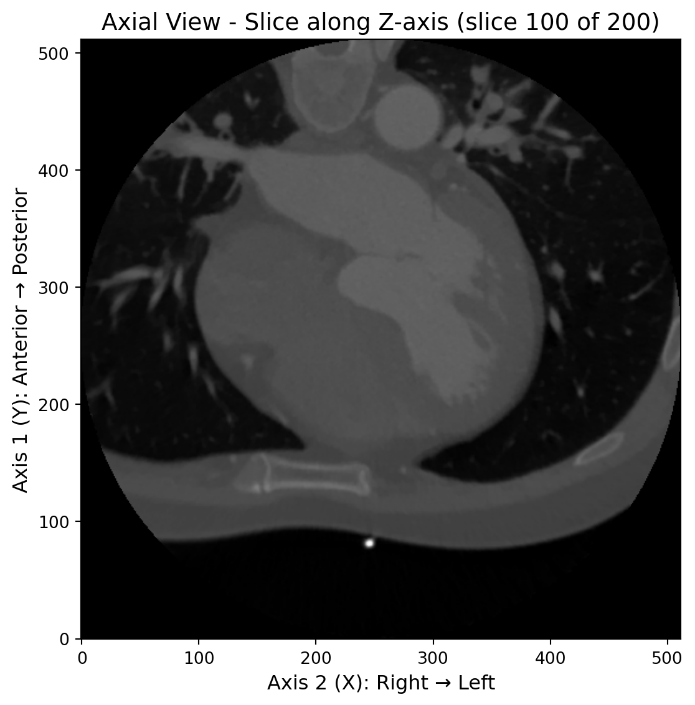
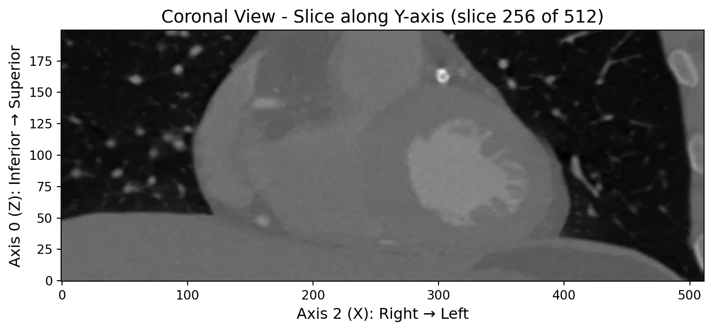
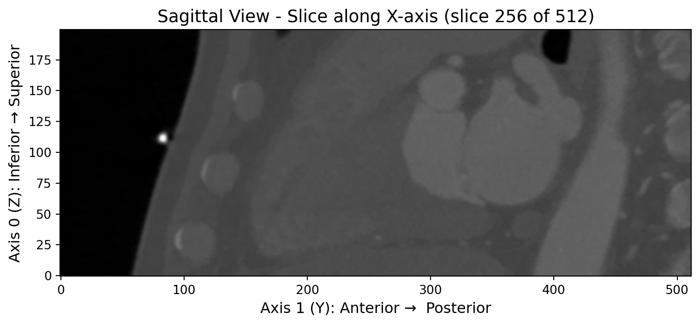

import dicube
from dicube import SortMethod
import numpy as np
import matplotlib.pyplot as plt
# 加载示例DICOM数据
dirname = 'dicube-testdata/dicom/sample_200'
# 使用右手坐标系排序方法加载图像数据
img_rh = dicube.load_from_dicom_folder(dirname, sort_method=SortMethod.POSITION_RIGHT_HAND)
print("=== 右手坐标系排序的图像数据信息 ===")
print(f"图像数据形状: {img_rh.raw_image.shape}")
print(f"排序方法: POSITION_RIGHT_HAND")
# 获取中心切片
def get_center_slices(image_data):
"""获取三个方向的中心切片"""
z_center = image_data.shape[0] // 2
y_center = image_data.shape[1] // 2
x_center = image_data.shape[2] // 2
return {
'axial': image_data[z_center, :, :], # 横断面
'coronal': image_data[:, y_center, :], # 冠状面
'sagittal': image_data[:, :, x_center] # 矢状面
}
slices_rh = get_center_slices(img_rh.get_fdata())
# 创建三个独立的图
# 1. Axial View (横断面)
fig1, ax1 = plt.subplots(1, 1, figsize=(8, 6))
im1 = ax1.imshow(slices_rh['axial'], cmap='gray', origin='lower')
ax1.set_title(f'Axial View - Slice along Z-axis (slice {img_rh.raw_image.shape[0]//2} of {img_rh.raw_image.shape[0]})', fontsize=14)
ax1.set_xlabel('Axis 2 (X): Right → Left', fontsize=12)
ax1.set_ylabel('Axis 1 (Y): Anterior → Posterior', fontsize=12)
plt.tight_layout()
plt.show()
# 2. Coronal View (冠状面)
fig2, ax2 = plt.subplots(1, 1, figsize=(8, 6))
im2 = ax2.imshow(slices_rh['coronal'], cmap='gray', origin='lower')
ax2.set_title(f'Coronal View - Slice along Y-axis (slice {img_rh.raw_image.shape[1]//2} of {img_rh.raw_image.shape[1]})', fontsize=14)
ax2.set_xlabel('Axis 2 (X): Right → Left', fontsize=12)
ax2.set_ylabel('Axis 0 (Z): Inferior → Superior', fontsize=12)
plt.tight_layout()
plt.show()
# 3. Sagittal View (矢状面)
fig3, ax3 = plt.subplots(1, 1, figsize=(8, 6))
im3 = ax3.imshow(slices_rh['sagittal'], cmap='gray', origin='lower')
ax3.set_title(f'Sagittal View - Slice along X-axis (slice {img_rh.raw_image.shape[2]//2} of {img_rh.raw_image.shape[2]})', fontsize=14)
ax3.set_xlabel('Axis 1 (Y): Anterior → Posterior', fontsize=12)
ax3.set_ylabel('Axis 0 (Z): Inferior → Superior', fontsize=12)
plt.tight_layout()
plt.show()=== 右手坐标系排序的图像数据信息 ===
图像数据形状: (200, 512, 512)
排序方法: POSITION_RIGHT_HAND

